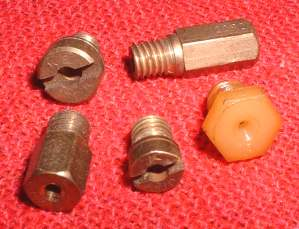
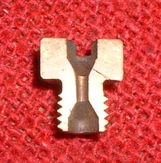
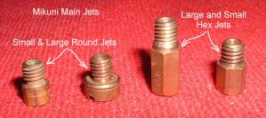
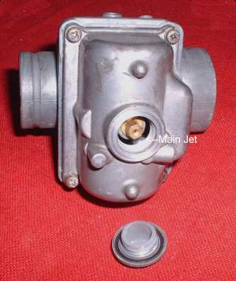
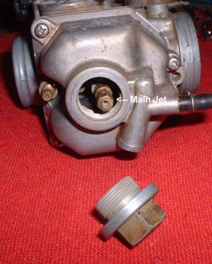
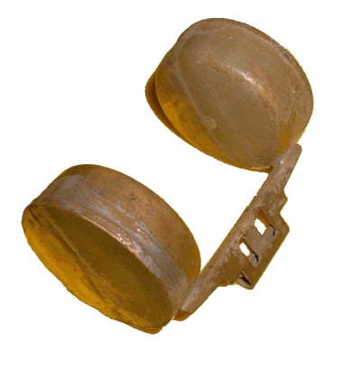

¶ Main jets control the top two thirds to full throttle more or less. Main Jets are easy to change. They are probably the second most useful jet in the carburetor after the Jet Needle. Many Carburetors have a cap covering them so you can easily replace them without pulling the Carburetor off the engine. They can usually be removed with either a small screwdriver or a small wrench. Main Jets can be made of Brass or Plastic.
 Section of a Main Jet |
 Mikuni Main Jet Sizes |
 Mikuni Main Jet Cap |
 Keihin Main Jet Cap |

Copyright © 1999-2015 dansmc.com. All rights reserved.